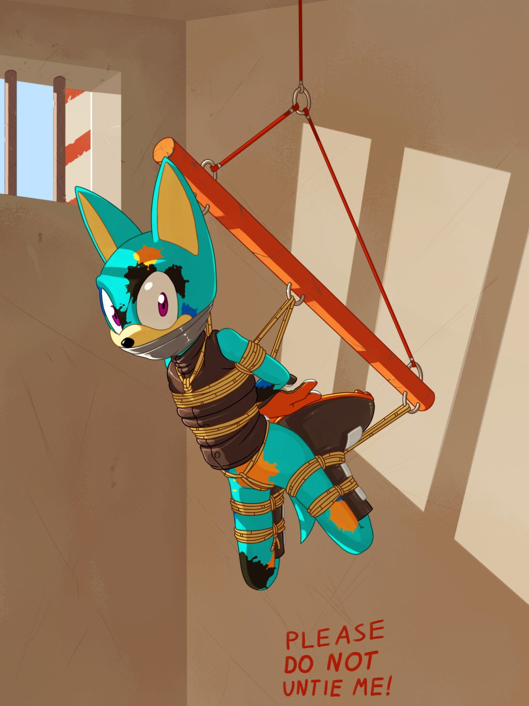

Bound and Raised
Written by TwistedSnakes
Commissioned by WendiBones
Illustrated by WhistlerIstler
"Oww!" Jay winced in pain as a huge burly shark pinned him to the ground. The canine was in a dingy room facing the white tiled floor having been tackled by the shark just a few moments before. The shark seemed to relish Jay's pain, exerting more of his weight upon the restrained canine and watching him squirm.
A leopard who was with the shark crouched down beside the canine's face. "So what would a little dog like you be doing in a restricted place like this?" he sneered.
"I must've taken a wrong turn and entered the wrong building. I could've sworn this is my coworking space," Jay explained.
"So you got past three locked doors, snuck past our guards, and rummaged through our headquarters' intel documents?" the leopard raised one eyebrow incredulously. Jay kept silent. He had not planned on getting caught, much less having to produce a believable cover story to his covert spying.
"Against the wall," the leopard instructed.
"Huh? Whoa-oof!" the canine gasped as the shark grabbed him by his shoulders, lifting him up and thrusting him against the wall, pinning him there. The leopard stepped up to him and began rummaging through his pockets and pouches.
"Visiting a friend, huh? In tactical gear, complete with a stealth handgun and taser," the cheetah examined them before tossing them to the ground with a clatter.
"Well, you see-" Jay started.
"Forged keycard. I guess that's how you got through our doors, eh?" the cheetah ignored the canine as he tossed the pair of metal picks onto the ground.
"Oh, those? I must've-"
"And the blueprints of Operation Dark Hound," the leopard took out a holographic plate containing various diagrams and steps.
"Huh? I don't know how those got there," Jay feigned ignorance. He had nothing left to lose.
"In your pocket."
"Yeah all sorts of things get into them, you know how it-" he was interrupted as the leopard unsheathed his utility dagger and brought it up to Jay's neck in one swift movement. "One more word of nonsense and I'll slice your throat where you stand," he threatened, "Do you understand?"
Jay gulped and nodded, his Adam's apple pressing against the cold steel of the knife as he did so.
"Good," the leopard smirked, "So who are you? Who sent you?"
Jay sighed. "The Heroes' Guild," he admitted, "We got word you mercenaries were going to stage a heist at the Paramount Bank, so I decided to snoop around."
"The Heroes' Guild, huh?" the leopard scoffed, "Well, does anyone know you're here?"
"Yes," the canine asserted, "Yes, my team knows about this. If I don't make it back by sundown, they'll be sending a rescue team here. They'll be busting through your doors and all of you will be caught. Why don't you two gentlemen let me go and we can forget this whole-" he was interrupted as the leopard's blade was pressed harder against his throat.
"We'll take our chances," the leopard smirked, "Besides, we have spies in the guild. We'll know if anyone's coming after you in a few hours. But in the meantime, let's get you somewhere...'safe'." Turning to the shark, the leopard instructed, "Bring him to the Confinement. We have a few empty cells that need filling."
"And if you make any dumb noises," the leopard warned as he sheathed his dagger, "I'll cut out that stupid voice box of yours." Jay glared back, angry at the leopard's threats. Angry at his being caught so easily.
With the shark holding the canine's arms behind his back in a vice-like grip, Jay was pushed deeper and deeper into the mercenaries' base, going past numerous locked and reinforced doors. Doors he wouldn't be able to escape without his keycard. When they reached the end of the stairs, the leopard led the other two down the rows of cells. Jay could see that some of them were occupied with huddled inmates. Probably people from rival mercenary factions.
Jay was thrown into a cell and the door shut behind him with the leopard and shark inside with him. Various hooks stuck out of the wall and ceiling with the ones on the walls holding coils of rope.
"Now, it's been a while since I've been handling the low-level grunt work. All the high-level planning takes up most of my time these days. But I still fancy practising some ropework on prisoners from time to time and since you tried to steal a week's worth of my tedious planning, I figured I'll do you a favour.
"Get your hands off m-" Jay protests were interrupted as the leopard taped his muzzle shut with a row of industrial tape. "Mfft!" he managed through his gag.
"Hold him still, hands behind his back," the leopard instructed the shark who complied. He grabbed a coil of rope and began binding Jay's wrists tightly so that they dug into his fur and skin. The rope formed neat loops around his wrists before going around his waist, binding his arms to his back.
Another coil of rope went around his chest and upper arms, squeezing them together tightly. The ends were knotted in the middle of his chest before being looped around his neck like a harness. A third rope was threaded through his armpits around the chest harness, tightening the loops and preventing Jay from slipping them off his shoulders. The leopard tugged on the rope and the canine could feel the coils tighten around his arms and chest.
"I'll take it from here," the leopard pulled the canine towards him and shoved him against the back. Unable to keep his balance with his bound arms, Jay fell to the ground with the impact knocking out the breath from his lungs. He squirmed around, unable to get up without the help of his arms.
The leopard pulled his ankles backwards until the back of his boots were pressed against his rump. More ropes bound his thighs and crus together, straining his knee joints.
"Mnggnft!" Jay winced in pain but the leopard didn't stop there. A rope was threaded through his neck loop, arms, and boot restraints, looping through the metal hooks that were part of a straight, metal bar. Before the canine knew what was happening, the shark was tugging the end of a length of rope, raising the bar into the air with Jay connected to it.

Suspended in the middle of the room, Jay squirmed as he was lifted higher and higher, trying to escape his predicament. The shark tied the other end of the rope to a hook, knotting it securely to make sure that it wouldn't come off with the canine's struggles.
The leopard stepped out of the cell with the shark following him, closing the cell door behind him. The security lock beeped as it activated, securely engaging the steel latches. Jay sighed. His team would be looking for him by the end of today. He should be out by tomorrow.
"By the way," the leopard peered into the cell, "Your beloved team leader...'Orion', was it? He's working for us. Nobody will hear about your escapade here. Feel free to...hang around for longer." He guffawed at his joke, ignoring the shark's rolling eyes as he strode down the corridor.
Jay's eyes opened wide in horror. "Mfft?!" he shouted through his gagged mouth as he resumed his fervent and desperate struggles. He didn't want to be trapped here! He hoped someone else knew about his mission. Someone else could come and save him.
Unfortunately for him, nobody knew.
~ End ~